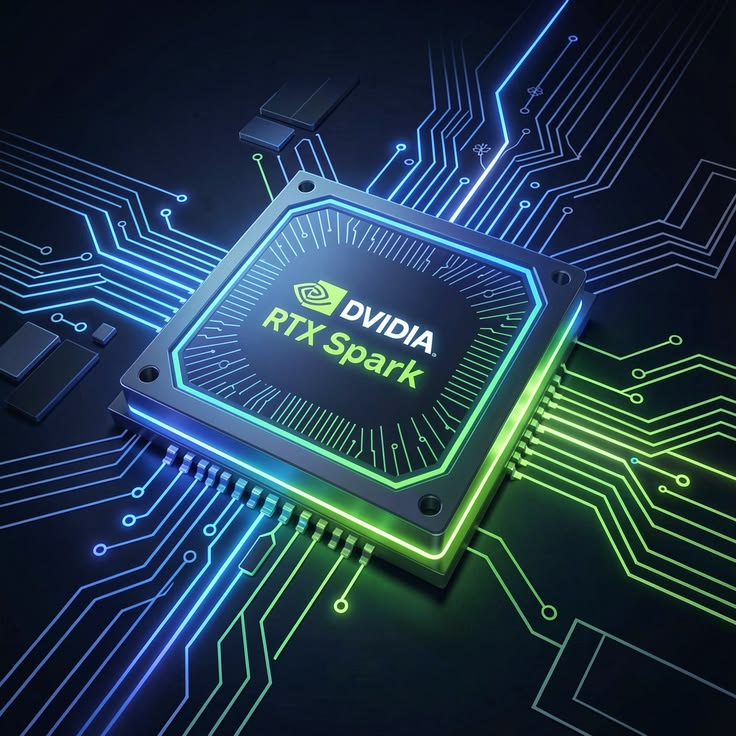

El futuro de las PC con IA: Microsoft y NVIDIA revolucionan el mercado con la Surface Laptop Ultra y el chip RTX Spark
Una alianza histórica que lleva la inteligencia artificial masiva al hardware de consumo local
El superchip N1X promete transformar la potencia informática sin depender de la nube
En el marco de su más reciente evento de hardware, Microsoft sacudió la industria tecnológica al anunciar el lanzamiento de sus nuevas portátiles premium: la Surface Laptop Ultra. La gran sorpresa de la presentación no fue solo el diseño del equipo, sino el motor que le da vida en su interior. Estas computadoras están equipadas con el nuevo y revolucionario superchip N1X, también conocido comercialmente como RTX Spark, desarrollado en colaboración con el gigante de los gráficos NVIDIA.
El propósito principal de este nuevo silicio es cambiar por completo las reglas del juego de la inteligencia artificial. A diferencia de las soluciones actuales que procesan la IA en servidores remotos, la Surface Laptop Ultra está diseñada específicamente para ejecutar de forma local modelos masivos de inteligencia artificial. Para lograrlo de manera fluida y sin retrasos, las configuraciones más avanzadas de estas laptops contarán con hasta 128 GB de memoria unificada, una cifra sin precedentes en el mercado de computadoras portátiles convencionales.
La respuesta de la industria y la apertura de preventas globales
Fabricantes líderes se suman de inmediato a la nueva arquitectura de hardware
El movimiento de Microsoft no es un caso aislado. Socios clave de la industria y fabricantes de renombre como ASUS, Lenovo, HP y MSI confirmaron de inmediato que adoptarán este nuevo estándar informático. Estas compañías abrirán de forma inminente las preventas de sus propios equipos equipados con el chip RTX Spark, expandiendo la tecnología a diferentes gamas de precios y diseños de computadoras de última generación.
Este anuncio ha generado un impacto inmediato en los mercados financieros globales. Las acciones de los competidores tradicionales en el sector de procesadores para PC (como Intel y AMD) sufrieron caídas notables tras la presentación. La entrada agresiva de NVIDIA en el terreno de los chips para computadoras portátiles, respaldada por el ecosistema de software de Microsoft, plantea un serio desafío al dominio histórico de la arquitectura x86 en la informática de consumo.
